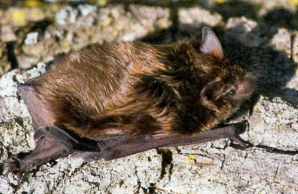
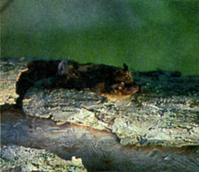
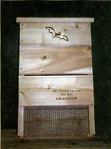
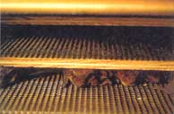
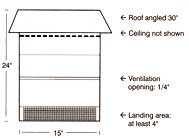

Control Insects By Bolstering Your Bat Habitat
Attract bats to your property, and enjoy the natural insect control and enhanced ecosystem biodiversity that accompanies them.
By Rob Mies
August/September 2001
Even the most stalwart outdoorsperson might feel a chill when encountering a bat swooping around the yard at dusk. Perhaps it's a natural reaction to fear flying things we can't see well, or maybe we're conditioned by lore and legend to abhor these furry fliers. In either case, bats share the floor with spiders when it comes to inspiring unwarranted fear. Despite their less-than-desirable reputation, bats possess a remarkable ability to control insects (especially disease-carrying mosquitoes). They also have a talent for pollinating plants and dispersing seeds, thereby promoting biodiversity.
Many bats, and almost all in the United States, thrive on an insect diet. A single bat can eat up to 1,200 mosquito-sized insects every hour, and each bat usually eats 6,000 to 8,000 insects each night.Their appetite for mosquitoes certainly makes a backyard more comfortable. Bats are opportunistic, and their lack of discretion benefits everyone. Some of their favorite prey include crop-destroying moths, cucumber beetles, flies and gnats. Natural insect control is their specialty.
Bats' nocturnal nature has made them a poor subject for study in the past, but a great deal of progress as been made in the last 20 years in researching the nearly a thousand different varieties. It's clear to many people now that bats play an important role in nature and are largely beneficial to humans around the world - their appetite for insects being only one of the services they provide.
Like birds, bats play a critical role in seed dispersal. For example, fruit bats living in the tropics excrete seeds from the ripe fruit they eat. They do this in flight, often a considerable distance from the parent tree. The seeds, packed into their own fertilizer (See "Guano Basics"), then grow into new fruit trees, regenerating the vulnerable rainforests. Some bats also drink nectar from flowers and - like hummingbirds, bees, and butterflies - pollinate the flowers. The saguaro and organ-pipe cactuses, which grow in the southwestern United States, depend on long-tongued bats for their pollination and survival. The cactuses, as nocturnal as the bats, flower only at night, and their configurations make it impossible for any creature but bats to access the nectar.
Unfortunately, about 40 percent of bat populations worldwide are in danger of going extinct. Several characteristics of bats cause them to be vulnerable. First, they are slow at reproducing. Most give birth to only one pup a year, which means they cannot quickly rebuild their populations. Second, most bats roost in large colonies. Bats living in temperate climate zones hibernate in caves or mines during the winter. During the summer, maternity roosts can house several million female bats and their offspring. Like putting all of your eggs in one basket, putting all your bats in one cave can result in disaster if the shelter is disturbed or destroyed.
Much of the blame for declining bat populations rests on human shoulders. Bats can be poisoned when they consume insects that have been sprayed with synthetic pesticides. But the biggest problem for bats, is the loss of natural habitat. Many bats prefer to roost in dead or dying trees under the loose and peeling bark, or in tree cavities. Some prefer to roost in caves or caverns. Populations have dwindled and diversity has suffered without the protection of these important natural roosts.
Several things can be done to create good bat habitat:
1. Leave dead trees on your property if they pose no hazard. They provide homes for bats, as well as for birds and other mammals.
2. Keep your yard as natural as possible. Do not use synthetic pesticides. If you do, spray only during the day and keep it low to the ground. Plant trees and vines to provide roosting areas for solitary bats that use plants for camouflage during the day.
3. Attract bats by planting herbs and flowers that invite night-flying insects. Flowers such as evening primrose and sweet rocket release scent at night, which attracts insects and gives bats an easy meal. Herbs, such as chives, mint, and marjoram, will also attract insects.
4. Provide a water source. By adding a water garden or backyard pond to your property, you will provide needed water for the colony. It will also benefit from the insects that will live in and around the water.
5. Build a bat house (see A Better Bat House ). Properly designed and placed houses provide alternative roosting sites for bats. They also give them a place to live outside of our attics, barns, and garages.
6. Teach others about bats. Talk to friends and family members to let them know bats are not to be feared, and provide substantial benefits to people and the environment.
Why, That's Just Batty ...
Blind as a bat? If your vision is less than stellar, you have more in common with a mole than a bat. Some bats can actually see as well as owls at night.
Keeping your head covered? Centuries ago, scientists wrongly classified bats as birds and assumed bats would be inclined to build nests. From the observation that bats have furry bodies, these scientistsdeter mined bats would need hair, human or otherwise, to make furry nests. It's not true, of course. Bats do not build nests, and have no need for your hair.
Don't they all have rabies? Like most mammals, bats can get rabies. Less than 0.5 percent, however, test positive for the disease. The best way to avoid rabies from any mammal (dog, cat, raccoon, fox, or bat) is not to touch the animal. Instead, if the animal seems ill or is a nuisance, report it to your local health department.
Nature's Sonar
Bats find their prey through echolocation similar to the sonar used aboard submarines. It allows bats to avoid obstacles and communicate with other bats. Bats force air from the lungs past the vocal cords, creating a high-fre quency sound usually too high for humans to hear. The sound bounces off the prey and back to the bat's ears. The bat can then form a mental picture of the size, dis tance, and speed of the insect. Bats' echolocation is so sensitive some bats are able to detect a single strand of hair.
A Better Bat House
A bat house in your backyard, or several around your garden or farm, will provide bats with a place to live. The bats will repay you by eating your insect pests. To attract and keep bats artificial shelters must simulate the bat's natural habitat through style and location.
Bat houses should be made of exterior plywood or rough cedar. The inside of the house should have grooves every quarter inch, or polyethylene plastic mesh on the front and back of the house. The house should be at least 2 feet tall and 16 inches wide with a three-quarter- to 1-inch opening. Use galvanized screws to assemble the house, and caulk it to keep the bats warm and dry. Adding a ceiling at the top of the house just below the roof and leaving a quarter-inch space about 6 inches from the bottom opening will create needed temperature variation. Be sure to leave a 4- to 6-inch area below the opening to serve as a landing spot. You can increase your chances of attracting bats by using a nontoxic, dark paint on the outside of the house to make the inside warmer for maternity colonies raising young.
Placement of the house is critical. Bat houses should be at least 12 feet off the ground, face south or southeast, and receive at least six hours of direct sun each day. The house should face an open area with at least 20 feet of clearance, so the bats can come and go with ease. Bat houses can be mounted on poles, garages, barns, chimneys, and trees. Be aware, however, that houses on trees are harder for bats to find and will take longer to become occupied if leaves obscure the house.
Bat Guano Basics
Bat guano is recognized worldwide as a superior fertilizer with fungicidal and nematocidal properties. Guano's basic composition is 10 percent nitrogen, 3 percent phosphorus, and 1 percent potassium. The high nitrogen content makes it an ideal fertilizer for house plants, vegetables, fruit trees, flowers, ornamentals, and lawns. In addition, bat guano contains large amounts of microbes that are highly beneficial to soil.
The preferred method for applying guano is to combine two or three tablespoonfuls with each gallon of water. This solution can be sprayed directly on plants for absorption or as a natural fungicide. The second most common method is to apply the guano directly to the soil at a rate of five pounds (three quarts) per 100 square feet of vegetable or flower pots.
Bat guano does come with one important caution. The lung ailment histoplasmosis can be contracted from breathing bat guano; which can contain a certain type of fungal spore. Symptoms can range from a mild cough to one requiring hospitalization. The risks are minimal since this fungal spore is usually associated with dry caves, and only those in the Southwest, Mexico, and Central America. Just in case, gardeners should wear a dust mask when working with guano.
Organization for Bat Conservation (OBC) is a nonprofit group dedicated to the protection of bats and their habitats through education, conservation, and research. This year, OBC launched "Kids in Conservation," a program designed to attract kids to science and nature through interactive programs and activities. OBC researchers also work to protect endangered bats such, as the Indiana bat found in the eastern United States and the golden bat found Rodriguez Island in the western Indian Ocean. To learn more about bats and OBC, visit their Web site at www.batconservation.org or call 248-645-3232.
 ILLUSTRATION: ALICE FLYNN Bat myths cause some to fear these little winged mammals, but in reality they're excellent at controlling pests - especially mosquitoes. |
 PHOTO: ORGANIZATION FOR BAT CONSERVATION The biggest threat facing bats is loss of habitat. |
 PHOTO: ORGANIZATION FOR BAT CONSERVATION Dead trees that do not pose a safety hazard make great shelter for bats. |
|
 PHOTO: ORGANIZATION FOR BAT CONSERVATION Build or purchase a bat house to attract these natural pest eradicators. |
 PHOTO: ORGANIZATION FOR BAT CONSERVATION Bats keep warm and dry inside their easy-to-build house. |
 PHOTO: ORGANIZATION FOR BAT CONSERVATION Anyone can build a bat house, and provide shelter for these valuable creatures. |